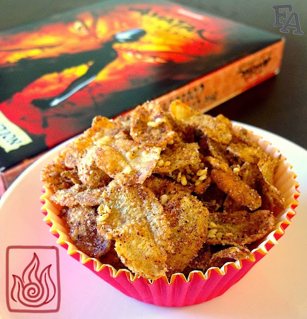

Fire Nation Fire Flakes

Along the lines of popcorn and nachos, flaming fire flakes are
available in the Fire Nation and its territories at public events
such as the Fire Days Festival in the Fire Nation Colonial Village (ATLA s.1, ep.16) and
entertainment venues like the Ember Island Theater (ATLA s.3, ep.17).
As per Fire Nation tastes, these flakes are seasoned with hot spices and served directly after roasting.
Ingredients:
- 1 Tbsp. Granulated White Sugar
- 1 Pkg. Taco seasoning
- 1 tsp. Garlic Salt
- 1/4 - 1/2 tsp. Ground Red Pepper Powder
- 4 Heaping Cups Plain Corn Flakes
- 4 Tbsp. Sesame Oil
Step-by-Step instructions:
- Preheat your oven to 275 F. In a small bowl whisk together the 1st 4 ingredients until combined.
Spice Note: Depending on how flaming you want your flakes, put either the 1/4 or 1/2 tsp. red pepper, or omit it all together if you're fine with taco seasoning level flames.

- Pour the corn flakes into a large container with a lid & then pour on the sesame oil. Close the lid & toss well until the flakes are completely coated. Add the mix of dry ingredients, close the lid, & toss again until the seasoning is distributed evenly throughout the flakes.

- Line a tray with parchment paper & pour the seasoned flakes onto the tray. Spread the flakes out evenly & bake for about 15 minutes. Serve warm.
Serving Suggestions:Add 1 Tbsp. sesame seeds (black or white, or both) to the seasoning mix for added flavor, texture, & color. You could also mix the finished flakes with crumbled seaweed (especially if you can find kimchi flavored). It adds extra Asian flair & flavor, & the colors look really great together. Also, fire flakes are great as a snack but they're also great crushed & sprinkled on plain white rice!
More pictures


.jpeg)
Home